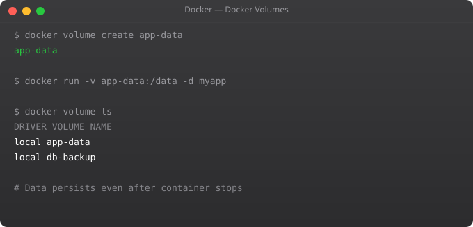

Running one Docker container with docker run works fine. Running five containers — a web app, an API, a database, a cache, and a background worker — with five docker run commands, each with the right environment variables, volume mounts, network connections, and port mappings — is a nightmare. You need 15 terminal tabs and a notepad to remember all the flags.
Docker Compose solves this. You write one docker-compose.yml file that describes your entire application stack. Then it is just docker compose up to start everything and docker compose down to stop it. One file, two commands, your entire development environment.
version: '3.8'
services:
app:
build: . # Build from Dockerfile in current directory
ports:
- "3000:3000"
environment:
- NODE_ENV=development
- DB_HOST=postgres
- DB_PASSWORD=devpassword
- REDIS_HOST=redis
volumes:
- ./src:/app/src # Bind mount for hot reload
depends_on:
postgres:
condition: service_healthy
redis:
condition: service_started
networks:
- app-network
postgres:
image: postgres:15
environment:
POSTGRES_USER: appuser
POSTGRES_PASSWORD: devpassword
POSTGRES_DB: myapp
volumes:
- postgres-data:/var/lib/postgresql/data
healthcheck:
test: ["CMD-SHELL", "pg_isready -U appuser"]
interval: 10s
timeout: 5s
retries: 5
networks:
- app-network
redis:
image: redis:7-alpine
ports:
- "6379:6379"
networks:
- app-network
volumes:
postgres-data:
networks:
app-network:
driver: bridge# Start all services (build images if needed)
docker compose up
# Start in background (detached)
docker compose up -d
# Force rebuild all images
docker compose up --build
# Start only specific services
docker compose up app postgres
# View logs from all services
docker compose logs
# Follow logs from specific service
docker compose logs -f app
# Stop all containers (keeps data)
docker compose stop
# Stop and remove containers, networks (keeps volumes)
docker compose down
# Stop, remove containers, networks, AND volumes (destroys data)
docker compose down -v
# Run a one-off command in a service
docker compose exec app bash
docker compose run --rm app npm run migrate
# Scale a service (run 3 copies)
docker compose up --scale app=3
# See status of services
docker compose ps# .env file (never commit to Git)
POSTGRES_PASSWORD=strongpassword
NODE_ENV=development
API_KEY=secret123# docker-compose.yml references .env automatically
services:
app:
environment:
- NODE_ENV=${NODE_ENV}
- API_KEY=${API_KEY}
postgres:
environment:
POSTGRES_PASSWORD: ${POSTGRES_PASSWORD}# docker-compose.yml — base config (shared)
# docker-compose.override.yml — automatically applied in dev
# docker-compose.prod.yml — for production
# Development (uses base + override automatically)
docker compose up
# Production
docker compose -f docker-compose.yml -f docker-compose.prod.yml upIn Part 7, we cover Docker registries — how to push images to Docker Hub and private registries, manage image tags and versions, and set up proper image naming conventions for CI/CD pipelines.
Docker Compose is a tool for defining and running multi-container Docker applications. You describe all your services, networks, and volumes in a single docker-compose.yml file, then start everything with docker compose up. Use it whenever your application has more than one container — a web app + database + cache is the classic example.
A Dockerfile defines how to build a single container image — the base image, dependencies, code, and startup command. A docker-compose.yml defines how multiple containers run together — which images to use, which ports to expose, how they connect, what volumes to mount, and what environment variables each container gets. Compose uses Dockerfiles to build images.
Use docker compose up -d (detached mode). The -d flag runs all containers in the background. Use docker compose logs to see their output. Use docker compose down to stop and remove all containers. Use docker compose ps to see which containers are running.
Yes. By default, Docker Compose creates a single network for your entire application and connects all services to it. Services can reach each other by their service name as a DNS hostname. You can define custom networks in the compose file to isolate services from each other more precisely.
docker compose up creates and starts all containers from scratch (or recreates them if the compose file changed). docker compose start only starts existing stopped containers without recreating them. For daily development, use docker compose up. Use start only after explicitly stopping with docker compose stop.